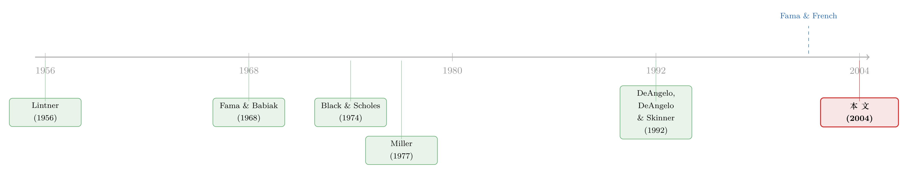

股利没有消失，它只是「搬」进了二十几家巨头的口袋
本文读的是 DeAngelo, DeAngelo & Skinner (2004, Journal of Financial Economics)：当 Fama and French (2001a) 宣告「派息公司」在二十年里少了一半以上时，人们顺势相信「股利正在消失」。但这三位作者把账重新算了一遍——1978 到 2000 年，工业企业付出去的实际股利不降反升（+22.7%）。秘密在于：消失的全是付一点点股利的小公司，而真正的大额股利被一小撮盈利极度集中的「老牌巨头」越付越多。股利没有消失，它只是在高度集中。
1 一个看上去无懈可击的故事
先讲一个几乎所有人都会信的故事。
1999 年前后，《纽约时报》《经济学人》《时代》周刊不约而同地写：股利（dividends）正在退场。它们引的，正是 Fama and French (2001a) 那篇标题就很扎眼的论文——《Disappearing Dividends》。这篇论文有一个无可辩驳的事实：从 1978 到 1998 年，美国非金融、非公用事业的上市公司（作者称之为「工业企业」，industrials）中，付股利的公司数量下降了超过 50%，少了一千多家。一个曾经的「成年仪式」——公司赚了钱就分给股东——似乎在一代人之内悄悄废止了。
数字是真的，方向也是真的。于是「股利在消失」这句话顺理成章。毕竟，付股利的公司都少了一半，付出去的股利还能多到哪儿去？
但这里就藏着本文的全部张力。「付股利的公司变少」和「付出去的股利变少」，根本就不是同一件事。 前者数的是「人头」，后者数的是「钱」。DeAngelo、DeAngelo 和 Skinner（下文简称 DDS）做的事，简单到近乎挑衅：他们不数人头，他们数钱。
结果是一个彻底的反转。
2 反转：钱不但没少，还多了
接着，一个自然的问题是：那二十年里，工业企业付出去的股利总额到底是涨是跌？
DDS 沿用 Fama-French 完全相同的抽样口径——CRSP 上份额代码（share code）为 10 或 11、SIC 代码落在 4900–4949 和 6000–6999 这两个区间（金融与公用事业）之外的 NYSE/AMEX/NASDAQ 公司，并要求 Compustat 上有股利与息税前盈利数据——把样本往后延到 2000 年，然后算了一个最朴素的加总。
答案是：1978 年这些工业企业一共付了 $31.3 billion 名义股利，2000 年付了 $101.6 billion，名义增长 224.6%。就算把通胀扣掉、统一折算到 1978 年的美元，实际股利也从 $31.3 billion 涨到了 $38.4 billion，实际增长 22.7%。
注意这里的口径。Fama-French 的抽样方法（先按 CRSP 份额代码 10/11 筛选，再匹配 Compustat）本身是一道防护网：它能挡掉「Compustat 近年大量收录付高额股利的外国 ADR」这类样本漂移带来的虚假增长。DDS 特意强调，他们的加总不吃这个亏——换句话说，这 22.7% 的实际增长不是统计假象。
所以悖论摆在面前：派息公司少了 50% 以上，派出去的实际股利却涨了 22.7%。 这怎么可能？
顺带说一句口径直觉。1978 年派息工业企业的实际股利均值是 $14.4 million，中位数只有 $1.4 million；到 2000 年均值涨到 $41.4 million，中位数 $3.6 million。均值和中位数差这么远，而且差距还在拉大——这本身就在悄悄告诉你：分布是极度右偏的，少数巨人正在主导这条河流。
3 真正关键的一步：消失的是「谁」
然后，真正关键的一步在于：把「消失的一千多家公司」和「增加的几十亿股利」分别看清楚，它们其实落在分布的两端。
DDS 把 1978 和 2000 两年的派息公司，按当年实际股利额从 $500 million 以上一直切到 $1 million 以下，做了一张分布表（论文表 4）。结果干净得惊人：
先看消失的那一头。 净减少的 1,246 家派息公司里，绝大多数集中在最小的两档。光是「每年付不到 $5 million」这一档，就净减少了 1,069 家——占全部净减少家数的 85.8%。可这 1,069 家小公司一起付的实际股利才 $1.1 billion 上下（精确说是减少了 $1,137 million）。换句话说，消失的几乎全是「付一点点零钱」的小公司，它们走掉，对股利总盘子几乎没有冲击。
再看增长的那一头。 「每年付 $100 million 以上」的公司，从 42 家增加到 76 家，净增 34 家；就这 34 家的增量，带来了 $12.6 billion 的实际股利增长。
把两头一对比，故事就讲完了：底部 1,069 家小公司带走的 $1.1 billion，被顶部 34 家大公司新增的 $12.6 billion 轻松淹没。 这就是 DDS 反复用的那个词——swamp，「吞没」。净结果，就是「派息公司大幅减少」与「总股利上升」同时发生，毫不矛盾。
这里有一个常被忽略的理论参照。Black and Scholes (1974) 和 Miller (1977) 早就论证过：对投资者真正有意义的，是带有某种特征（比如「现在就以股利形式发钱」）证券的总供给，而不是有多少家公司在供给、或每家供给多少。从这个视角看，几千家小公司退出派息其实无关紧要——只要总供给足以满足「当期想拿现金股利」的总需求。而既然 1978–2000 年实际股利总供给是增加的，那么派息公司数量的下降就不可能是被总需求萎缩拉下来的，它一定反映了企业供给侧某个更根本的变化。
4 集中度：一小撮巨人的独唱
于是反转之后，更深的一层浮现出来：股利不只是「没消失」，它还在急剧集中。
DDS 把派息公司按当年股利额每 100 家一组排队（论文表 3）。2000 年，最大的 100 家派息公司，一家就分掉了全部工业企业股利的 81.8%——而 1978 年这个比例是 67.3%。更夸张的是，2000 年这前 100 家付的 $31.5 billion 实际股利（折成 2000 年美元是 $83.2 billion），已经超过 1978 年全部 2,176 家派息公司加起来付的 $31.3 billion。
集中到什么程度？把镜头再推近：2000 年付股利最多的 25 家公司——全是「老字号」（old-line）的成熟企业——一家就供给了全部工业企业股利的 54.9%，超过一半。
而且，这种集中的增加几乎全部来自最顶端的 100~200 家，跟「公司数量减少」没有半点关系。这一点很重要，因为它堵死了一个偷懒的反驳：「集中度上升只是因为分母（公司数）变小了」。不是的——是分子（顶端那几家付的钱）实打实地变大了。
5 往下挖一层：股利的集中，是盈利的集中
但故事到这里还差最后一块拼图。一个挑剔的读者会问：凭什么这二十几家公司能把股利越付越多？
DDS 的回答可以一路追到 Lintner (1956) 那个古老而稳固的发现：公司的股利决策，主要由盈利驱动。 如果股利在集中，那很可能是因为它背后的盈利在集中。
证据链是闭合的。DDS 把派息公司按盈利重排（论文表 5），发现盈利的集中比股利还猛：1978 年前 100 大派息公司贡献了所有派息公司盈利的 57.5%，前 200 家贡献 71.0%；到 2000 年，这两个数字分别飙到 74.0% 和 86.0%。前 100 大派息公司的实际盈利，从 1978 年的 $47.5 billion 涨到 2000 年的 $80.2 billion；而派息公司整体实际盈利从 $82.7 billion 涨到 $108.3 billion（+31.0%）。
把视角拉到全样本（派息+不派息一起算），更醒目：2000 年，仅 28 家实际盈利在 $1 billion 以上的公司，就产生了当年工业企业总盈利的多数，并且贡献了全部工业企业股利的 50.1%。
这就引出 DDS 概括的那幅图景——两层结构（two-tier structure）：极少数盈利极高的公司，集体产生了大部分盈利、并主宰了股利供给；而剩下绝大多数公司，对总盈利和总股利的合计影响至多是「轻微」的。美国工业企业的派息世界，本质上是一场二十几个巨人的独唱，外加几千个跑龙套的合唱团。
6 那 Fama-French 错了吗？没有
讲到这里，必须停下来澄清一件事，否则容易把这篇论文读成「打脸 Fama-French」。它不是。
Fama and French (2001a) 的核心论断之一是「派息倾向（propensity to pay）下降」——即在控制了盈利和成长机会之后，公司如今更可能选择零股利。DDS 的数据完全证实了这一点：1978 年，实际盈利在 $1 billion 以上的公司100% 都派息；到 2000 年，这个比例降到 85.7%。在最顶端的 28 家盈利巨头里，2000 年有 14.3% 是不派息的（主要是科技公司），而 1978 年顶端盈利公司里不派息的比例是 0.0%。
所以「派息倾向下降」是真的。DDS 想说的是另一件事：尽管同样规模的盈利如今更可能不派息，但顶端公司的盈利涨得太多了，以至于「派息倾向下降」这股力量，被「顶端盈利暴涨」这股力量盖了过去。两股力量方向相反，后者更大，净效应就是总股利上升。
一句话——Fama-French 数对了「倾向」，但「倾向」乘上一个暴涨的「盈利基数」，结果是总额上升。这不是矛盾，这是把同一枚硬币翻到了另一面。
（关于股利「忽隐忽现」这件事后来怎样被接着研究下去——把它和投资者对「派息股」的情绪溢价挂上钩——可参见《股利忽隐忽现的四十年，竟都写在一个「溢价」里》。）
7 文献脉络
把这条线索拉直来看，它其实是一部「股利由什么决定」的认识史。
最早的锚点是 Lintner (1956)：他通过访谈和回归发现，经理人把股利「黏」在长期盈利上，平滑地调整、不轻易削减。Fama and Babiak (1968) 用更大样本把 Lintner 的局部调整模型做实，确认了「盈利驱动股利」这个经验规律。这是整条脉络的地基——记住这块地基，本文最后那记反转才站得稳。
接着，理论那一侧，Black and Scholes (1974) 和 Miller (1977) 提供了「总供给视角」：投资者在意的是某类证券特征的总供给，而非提供者的数量。这恰好是 DDS 用来「赦免」那几千家退出小公司的理论武器。

然后，DeAngelo, DeAngelo and Skinner (1992) 把盈利与股利的关系往「亏损」那一端推进——研究公司在亏损时如何削减股利，为「股利反映长期而非一次性盈利」这一思路添砖。
真正点燃这场讨论的，是 Fama and French (2001a)：一篇标题极具传播力、事实极其扎实的论文，记录了派息公司数量的崩塌，并提出「派息倾向下降」。媒体把它读成了「股利消失」。
本文（DDS 2004）就站在这个位置上：它不推翻 Fama-French，而是给同一组事实换了一把尺子——从「数公司」换成「数钱」，再换成「数盈利的集中度」，最终把「消失论」翻转成「集中论」。它和后来 Bagwell and Shoven (1989)、Allen and Michaely (1995) 所综述的「现金分配总量」视角一脉相承。
8 评论与延伸（Q&A + 研究方向）
(a) 几个可能的疑问
Q：这篇论文有因果识别吗，还是纯描述？
坦白说，它是一篇描述性（descriptive）论文，没有 DiD、IV、RDD 这些识别机器，也不需要。它的贡献不在「证明 A 导致 B」，而在「纠正一个被广泛误读的事实」。它的「识别」其实是会计恒等式式的——把总额拆成「家数 × 人均」，再把分布拆成头尾两端，让数字自己说话。对这类论文，威胁不是内生性，而是测量与口径。
Q：那它的口径稳健吗？会不会是样本选择凑出来的结论？
这恰恰是论文最用力的地方。它刻意沿用 Fama-French 完全相同的抽样规则，就是为了让「我们和你看的是同一批公司，只是算法不同」无可辩驳。它还专门做了稳健性：把
CRSP上有股利数据但Compustat缺失的公司用CRSP股利补回来，$7.1 billion的实际股利增量只收窄了$129 million——结论不变。
Q：「股利没消失」和「派息倾向下降」到底矛不矛盾？
不矛盾。前者讲的是总额（受顶端盈利基数主导），后者讲的是条件概率（同等盈利下选不选派息）。2000 年顶端盈利公司派息比例从 100% 降到 85.7%，倾向确实降了；但它们的盈利基数翻倍还多，乘起来总额照样上升。两者描述的是分布的不同侧面。
Q：那回购呢？是不是回购替代了股利，才显得股利「集中」？
这是本文一个诚实的留白。论文聚焦股利总供给本身，对「回购替代股利」着墨不多（虽然引了 Shoven 1986、Bagwell-Shoven 1989、Vermaelen 1981 等回购文献）。如果把回购也算进「现金分配总量」，集中度的故事很可能更强——因为大额回购同样高度集中在盈利巨头手里。但严格说，本文没有把这块补全。
Q：为什么强调 NYSE？
2000 年，NYSE 上市公司占了派息公司的 66.0%、却贡献了 97.4% 的股利（1978 年分别是 45.0% 和 94.7%）。这与「集中」的故事完全自洽：老牌、稳定、盈利高的公司倾向在 NYSE 上市并派息，年轻成长型公司则在 NASDAQ 交易且通常不派息。交易所分布，其实是两层结构的另一个投影。
Q：对「股利信号假说」和「股利顾客群假说」有什么含义？
论文第 7 节专门讨论了。两层结构意味着：股利的信号与顾客群机制，主要由顶端那一小撮公司承载——它们持续、稳定地派发大额股利。底部几千家公司的进进出出，对这些机制的总量含义其实很有限。
(b) 几个可能的研究问题与提案
1. 把「两层结构」搬到公司债 / 信用市场。
【经济故事】DDS 发现股利供给高度集中于二十几家盈利巨头。一个自然的平行问题是：投资级公司债的「安全资产供给」是不是也由极少数巨头主导？ 如果是，那么「企业部门提供安全债」的能力，就系于一小撮发行人的盈利稳定性之上——这对系统性风险和流动性都有含义。 【可行性】高。用
Mergent FISD+TRACE+Compustat，按发行人加总投资级债务存量，复刻 DDS 的「每 100 家一组」集中度表即可，纯描述就有价值。
2. 外资持有人偏好「顶层」吗？
【经济故事】既然股利与盈利都集中在 NYSE 老牌巨头，而这些正是外国机构最熟悉、最敢买的名字——那么外资持股是否进一步放大了顶层的资本可得性，从而强化了集中？机制是「熟悉度 + 流动性」双重筛选。 【可行性】中。需
13F/TIC层面的外资持仓与公司层面盈利集中度匹配；识别上可借汇率或指数纳入（如 MSCI 重定权）做准自然实验，但干净的外生冲击不易找。
3. 集中度上升是「真实经济集中」还是「上市结构变化」？
【经济故事】盈利集中可能来自两个完全不同的源头：要么是经济本身的赢家通吃（superstar firms），要么只是「小公司大量上市又退市、幸存的全是大公司」这一上市结构变迁的副产品。把两者分开，关乎我们如何理解美国企业部门的演化。 【可行性】中。需要把样本变动（新上市、退市、并购）逐年分解——DDS 已在第 6 节做了部分（多数退出公司是被并购的），可在此基础上做完整的「进入-退出-存活」分解。数据现成，工作量在清洗。
4. 把分析延到 2000 年之后。
【经济故事】DDS 的样本停在 2000 年，恰好在科技股「迟迟不派息」的高峰。但 2003 年股利税改之后、以及苹果等科技巨头 2010 年代陆续启动派息之后，两层结构是更极端了，还是顶层被科技新贵改写了？这是对论文结论的直接外推检验。 【可行性】高。数据完全现成，方法就是把 DDS 的表 3–表 5 一路滚动更新到今天，看集中度曲线如何延伸。
9 我的判断
这篇论文的贡献，不在任何一个新模型或新计量，而在一种学术上的克制与诚实：面对一个被媒体和直觉广泛接受的结论，它没有去推翻 Fama-French 的任何一个数字，而是换一把尺子，让同一组事实讲出一个截然不同、且更准确的故事。「数人头」和「数钱」之差，二十年里被忽略，本身就说明集中度这件事多么反直觉。它把「股利消失」这个流行叙事，干净利落地改写成「股利集中」。
对识别的担忧，主要不在因果（它本就不主张因果），而在口径与时点。它依赖 1978 和 2000 两个端点年份；尽管图 1 显示这两年的总股利并无异常、只是长期上行趋势的一部分，但任何两点比较都对端点选择敏感。此外，把回购排除在「现金分配」之外，使「集中」的故事其实被低估了——这是一个保守但不完整的处理。
后续我最想看到的，是把这套「两层结构」的透镜，系统地搬到信用市场与外资持有人上：如果美国企业的安全债供给也像股利一样，悬于二十几家盈利巨头之上，那么我们对「企业部门韧性」的很多默认假设，可能都需要重新称重。
参考文献
Allen, F., Michaely, R. (1995). Dividend policy. In: Jarrow, R. A., Maksimovic, V., Ziemba, W. T. (Eds.), Operations Research and Management Science. Elsevier Science, Amsterdam.
Bagwell, L., Shoven, J. (1989). Cash distributions to shareholders. Journal of Economic Perspectives 3, 129–140.
Black, F., Scholes, M. (1974). The effect of dividend yield and dividend policy on common stock prices and returns. Journal of Financial Economics 1, 1–22.
DeAngelo, H., DeAngelo, L., Skinner, D. (1992). Dividends and losses. Journal of Finance 47, 1837–1863.
DeAngelo, H., DeAngelo, L., Skinner, D. (2004). Are dividends disappearing? Dividend concentration and the consolidation of earnings. Journal of Financial Economics 72(3), 425–456.
Fama, E., Babiak, H. (1968). Dividend policy: an empirical analysis. Journal of the American Statistical Association 63, 1132–1161.
Fama, E., French, K. (2001a). Disappearing dividends: changing firm characteristics or lower propensity to pay? Journal of Financial Economics 60, 3–43.
Lintner, J. (1956). Distribution of incomes of corporations among dividends, retained earnings, and taxes. American Economic Review 46, 97–113.
Miller, M. (1977). Debt and taxes. Journal of Finance 32, 261–275.
Shoven, J. (1986). The tax consequences of share repurchases and other non-dividend cash payments to equity owners. In: Summers, L. (Ed.), Tax Policy and the Economy, Vol. I. NBER and MIT Press, Boston, pp. 29–54.